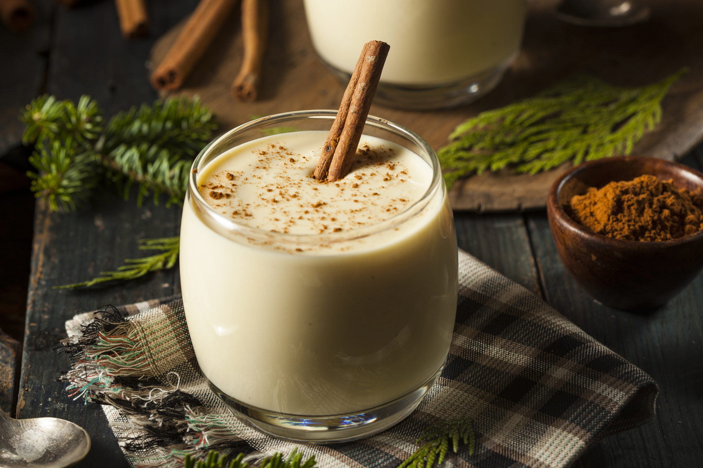

Impossibly Easy Mac and Cheese Pie

this is a picture of mac 'n cheese! who would have known!
Save time! Try a delicious version of mac 'n cheese where you don't have to precook the mac!
Ingredients
Soft Custard
- 2 cups shredded Cheddar cheese (8 oz)
- 1 cup uncooked elbow macaroni (3 1/2 oz)
- 1/2 cup Bisquick™ Original baking mix
- 4 1/2 cups milk
- 1/4 teaspoon red pepper sauce
- 2 eggs
- Heat oven to 375°F. Spray 9-inch glass pie plate with cooking spray. Place uncooked macaroni in pie plate. Sprinkle with 1 3/4 cups of the cheese.
- In medium bowl, stir remaining ingredients with wire whisk or fork until blended. Pour into pie plate.
- Spray sheet of foil with cooking spray; place sprayed side down over pie plate. Bake 40 minutes. Uncover; bake 8 to 10 minutes longer or until knife inserted in center comes out clean. Sprinkle with remaining 1/4 cup cheese. Bake 1 to 2 minutes longer or until cheese is melted. Let stand 5 minutes before serving.